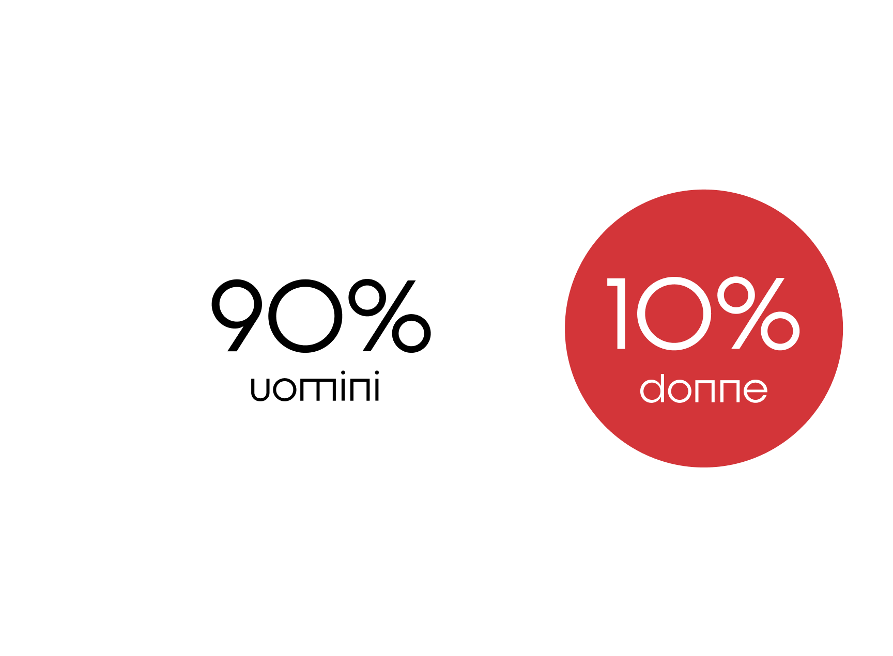

HIKIKOMORI: la sindrome che colpisce i giovani.
Hikikomori è una parola che deriva dai verbi giapponesi “hiku” (tirare indietro) e “komoru” (ritirarsi), e si riferisce all’isolamento.
Il fenomeno degli hikikomori nasce in Giappone e, negli ultimi anni, si è esteso in molti paesi sviluppati. I soggetti, spesso arrivano a un ritiro volontario e prolungato dalla vita sociale, evitando ogni contatto con il mondo esterno.

Incidenza di casi in Italia.
1 ragazzo su 10 è hikikomori.
Secondo le statistiche sono 150 mila i casi accertati di giovani hikikomori, più precisamente appartenenti alla fascia d’età compresa tra i 14 e i 30 anni.



Il fenomeno riguarda soprattutto gli studenti: il numero si aggira tra i 50 e i 70 mila.
L’alienazione e la perdita della propria identità.
Il dissociamento dalla realtà comporta gravi conseguenze mentali:
Pressione sociale, aspettative familiari e bullismo spingono molti giovani al ritiro. Il timore del fallimento e l’ansia da prestazione li demotivano, mentre il senso di colpa e la mancanza di supporto familiare aggravano il disagio. Spesso è proprio l’emarginazione scolastica che tende a rafforzare la scelta dell’isolamento.


- Problemi di natura fisica
- Non voler vedere nessuno
- Problemi di natura psicologica
- Problemi familiari
L’isolamento sociale volontario.
Sono state rilevate alcune fasi, in grado di differenziare l’isolamento degli hikikomori da un semplice ritiro sociale:


40%
degli hikikomori italiani
tra i 15 e i 26 anni, si isola per un periodo che va dai 3 ai 10 anni.
Psicologicamente l’individuo si disconnette dal mondo circostante e inizia a perdere il senso del tempo e della propria identità. A livello fisico il ritiro sociale induce uno stile di vita sedentario, aumentando il rischio di disturbi alimentari, posturali e muscolari.

Un gesto estremo come via di fuga.
Un’isolamento radicale aumenta il rischio di suicidio.
Sono diversi i fattori psicologici che portano un hikikomori a commettere gesti estremi, come ad esempio il crescente senso di solitudine, la depressione e la disperazione. Tutto questo porta il soggetto a sentirsi intrappolato e senza speranza, e il non riuscire a "rientrare" nella società alimenta ulteriormente la frustrazione e i pensieri suicidari. L'assenza di supporto psicologico o sociale può solo aggravare la situazione.
Ti riconosci nel fenomeno descritto o conosci qualcuno che potrebbe esserlo?
Sappi che puoi chiedere supporto.
La FOMO non è una problematica da sottovalutare, con l’aiuto di professionisti è possibile superarla. Non esitare a farti sentire.